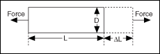

Strain (ε) is the amount of deformation of a body due to an applied force.
Specifically, strain is the fractional change in length, as shown in the following illustration.

Strain can be positive (tensile) or negative (compressive). Although dimensionless, strain is sometimes expressed in units such as
in./in. or mm/mm. In practice, the magnitude of measured strain is very small. Therefore, strain is often expressed as microstrain (�ε).
When a uniaxial force strains a bar, as in the preceding illustration, a phenomenon known as Poisson Strain causes the girth of the bar, D, to contract in the transverse direction, which is perpendicular to the force. The magnitude of this transverse contraction is a material property indicated by its Poisson's Ratio. The Poisson's Ratio of a material is the negative ratio of the strain in the transverse direction to the strain in the axial direction, which is parallel to the force. Poisson's Ratio for steel, for example, ranges from 0.25 to 0.3.
 �Strain - Continuous Input
�Strain - Continuous Input �Add�
�Add�